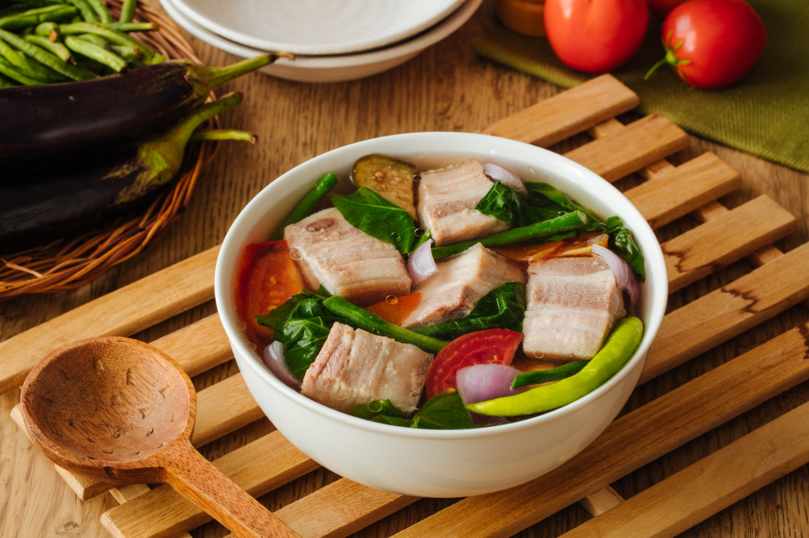

|  |
| Ingridients | 4 pounds pork cuts 44 grams Knorr Sinigang sa Sampaloc Mix 5 pieces of kangkong 15 pieces of sitaw 5 pieces okra 1 piece eggplant 1 cup sliced labanos 1 piece tomato sliced 3 pieces long green pepper 1 piece onion 2 quarter water Fish sauce And ground black pepper for the taste |
|---|
| Guide How To Cook Sinigang na baboy |
| First, pour water into the pot together with the tomato and onion and simmer it for about 8 minutes then put 4 pork cuts in the pan and then put A long green chili, radish, eggplant, and okra in the pot and Let it simmer until cooked through then Long beans, kangkong stalks, and leaves are added at the last minute before pouring in the Knorr Sinigang sa Sampalok Mix Original. Give this a gentle stir and allow to simmer for a few minutes after it your done You can serve the sinigang na baboy |